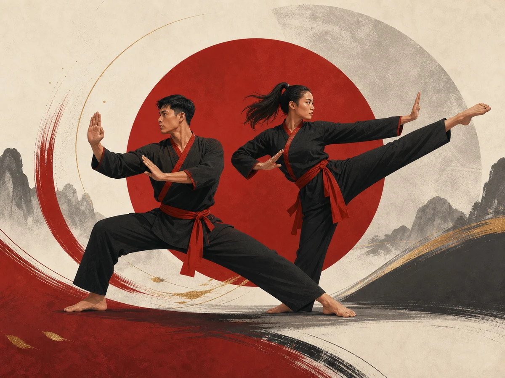

Origine et culture
La page officielle présente ces pratiques comme un ensemble de styles développés au Viêt Nam, enrichis par une longue histoire de défense, de transmission et d’adaptation culturelle.
Pratique représentée
Les arts martiaux vietnamiens rassemblent des pratiques issues de l’histoire martiale du Viêt Nam. La page officielle les rattache au Vo Thuat, aux traditions vietnamiennes et à des écoles comme le Vovinam ou le Qwan Ki Dao.
Voir la source officielle
La page officielle présente ces pratiques comme un ensemble de styles développés au Viêt Nam, enrichis par une longue histoire de défense, de transmission et d’adaptation culturelle.
Le Vo Thuat y est expliqué comme l’expression vietnamienne des arts martiaux, avec une approche qui ne se limite pas au combat mais intègre aussi la voie, l’éthique, la connaissance de soi et le développement du pratiquant.
La page officielle met en avant plusieurs repères, dont le Viet Vo Dao, le Qwan Ki Dao et le Vovinam, ainsi que les arts martiaux traditionnels vietnamiens.